Early Load Execution via Constant Address and Stride Prediction
Abstract
一种有效减少加载操作延迟的系统和方法。 在各种实施例中，处理器的逻辑在获取指令之后访问预测表。 对于预测表命中，逻辑使用从预测表中检索到的预测地址执行加载指令。 对于预测表未命中，当逻辑确定加载指令的地址并命中学习表时，且当学习表中存储的地址与确定的地址匹配时，逻辑更新置信度指示以指示更高的置信度。 当逻辑确定存储在学习表的给定表条目中的置信度指示达到阈值时，逻辑在预测表中分配存储在给定条目中的信息。 因此，在下一次查找预测表时，预测地址可用。
Patent 实在是不好读。 十分啰嗦。
Processor Core
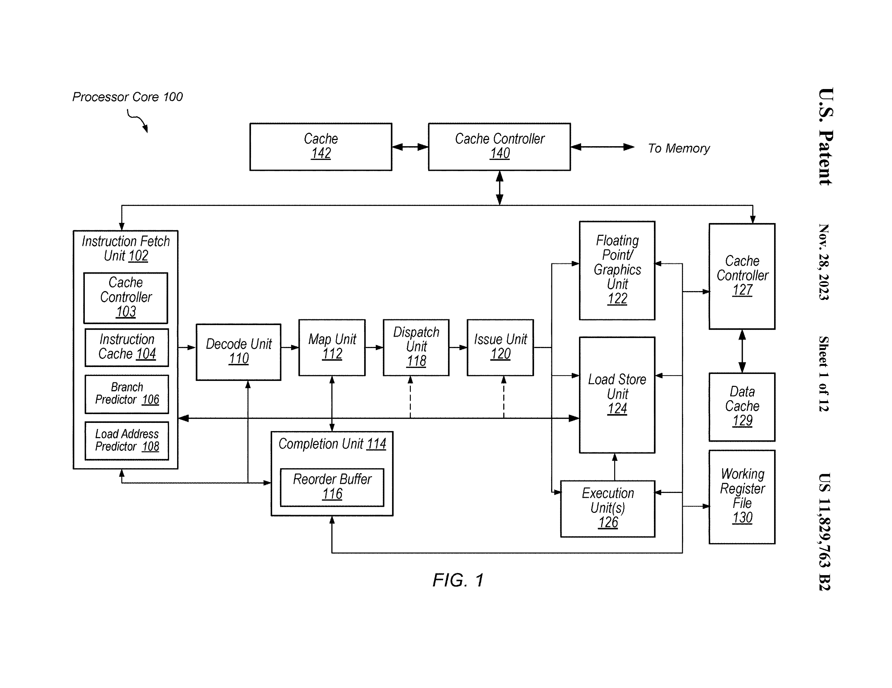
注意这里利用了 PC history akey 去做查找。且查找可能在 decoder 前/同时/后。
Map Unit 用于给译码结果或者 uop 分配物理寄存器。
STL 会被认为 mispredict 这是用于防止从 cache 读造成的 RAW 错误。
Early Load Method
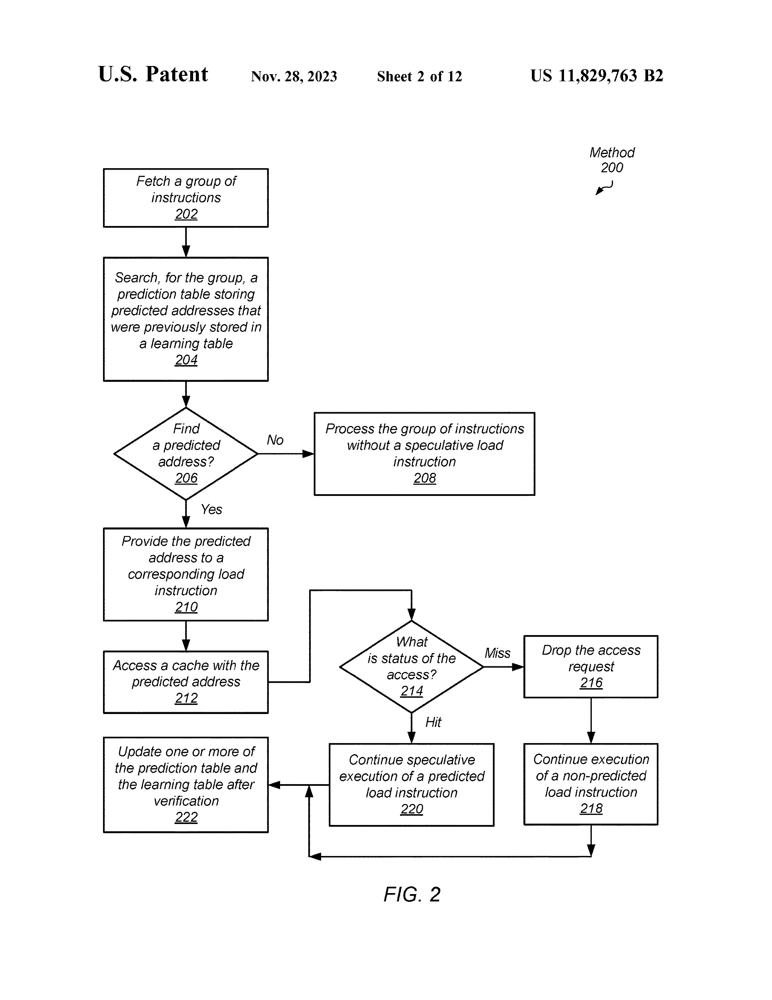
intsr. 会被拆分为两条指令 pred. instr. 和 non-pred. instr.。
注意到这里强调 predicted load 需要在 cache 中。 这很合理，因为如果不在，predicted 和 non-predicted load 之间的延迟差别不大。
但是文中也说也可能会进一步向更低的 cache 查找。
Load Addr. Predicting Method
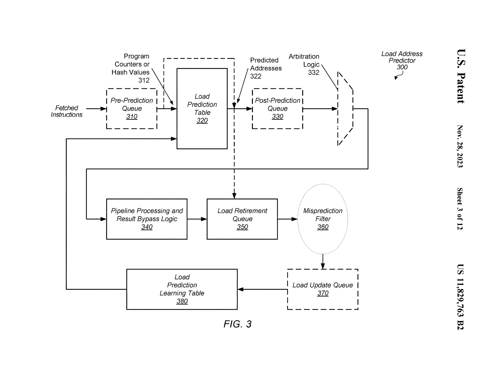
注意到这里强调了一个 arbitration logic，这意味着进程信息等许多因素决定了 load 是否会被预测。 因素的权重被一个 programable reg. 保存。
在这个方法中，被执行的 pred. load 和 cache miss 的 pred. load 会被放到 retire queue。 基于 PA 对 retire queue 中的 load 进行检查，更新 learning table。
不是所有的 retire queue 中的 instr. 都会被学习。 例如总是预测错误的可能会被记录到 filter，后续不再学习之。
Table Entry
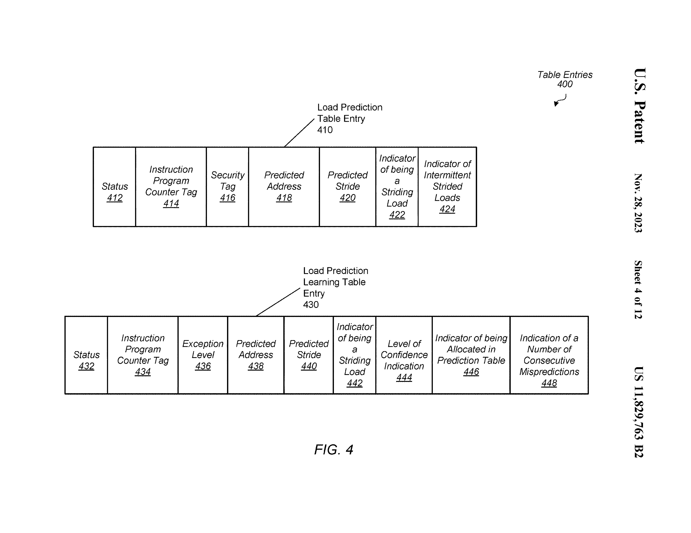
Securty tag 可能包括ASID、VMID。
这里的 intermittent strided load 很有意思。 由于提高 LT 中置信度导致在 PT 中分配 entry 的 load 和下一个周期被预测的 load 中有多个指令正在流水级，故可能会导致 stride 预测错误。 这里采用两种方式解决：
- 认为第一个在 PT 中查找到的是 probing instr.，阻塞后面的查询，直到 probing tnstr. 被处理结束，确定 intermittent 的数量。
- 跟踪记录流水级中 instr. 的 PC，直接确定 intermittent 的数量。
PT Miss Handling Method
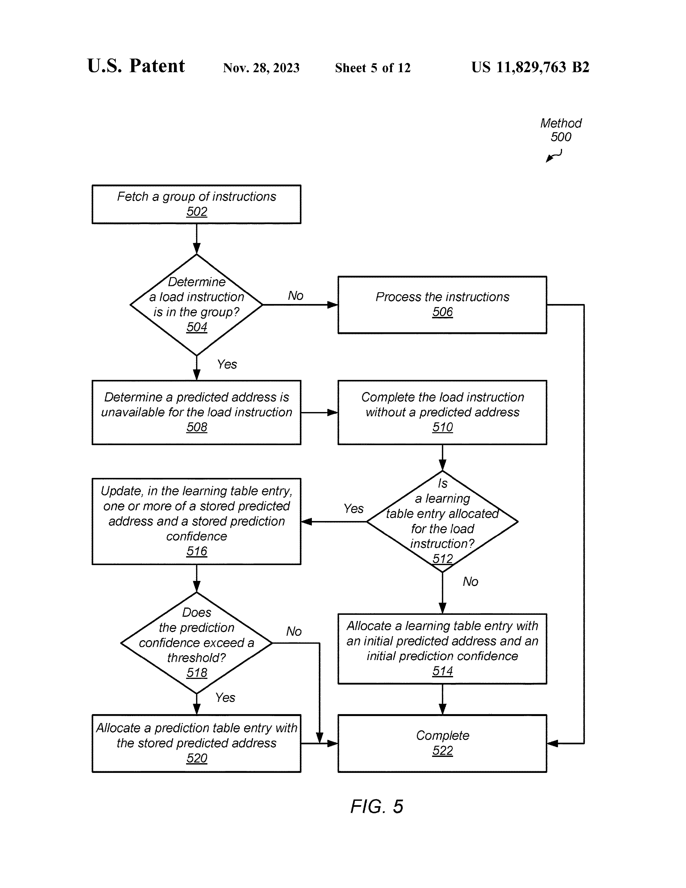
会在 accessing LT 之前首先做 STLF。 这里提到 STLF 也会有 prediction。
LT Entry Updating Method
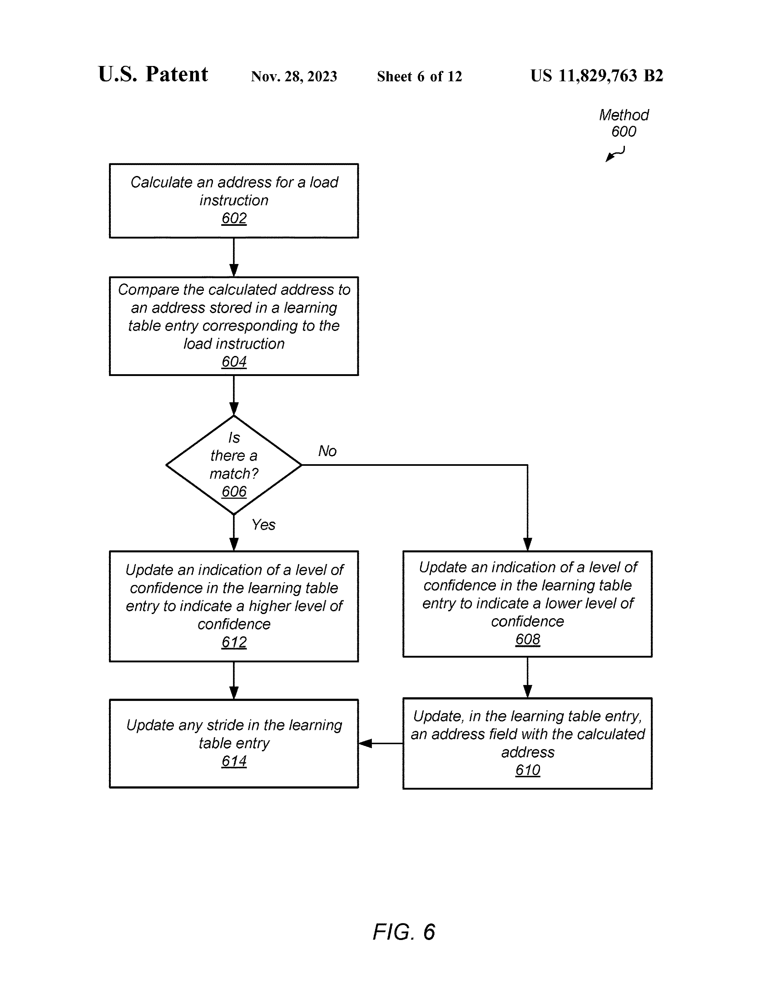
注意到这里有种实现是更新 base addr. 为原本的 base addr. + stride。
PT Entry Updating (Based on LT Entry Updating) Method
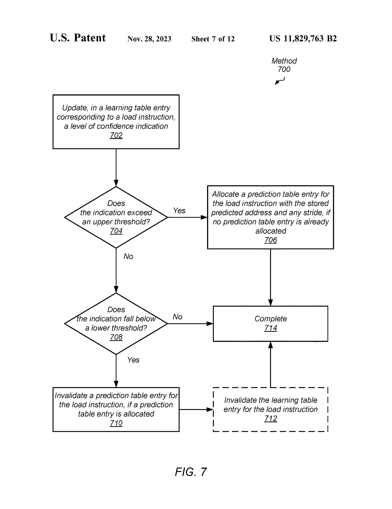
LT entry 中的置信度会决定是否添加/清除 PT entry。
PT enrty 清除的阈值可能会比 LT entry 清除的阈值高。 也有可能 LT entry 不主动清除，只会被 evict。
LT&PT Resource Saving Method
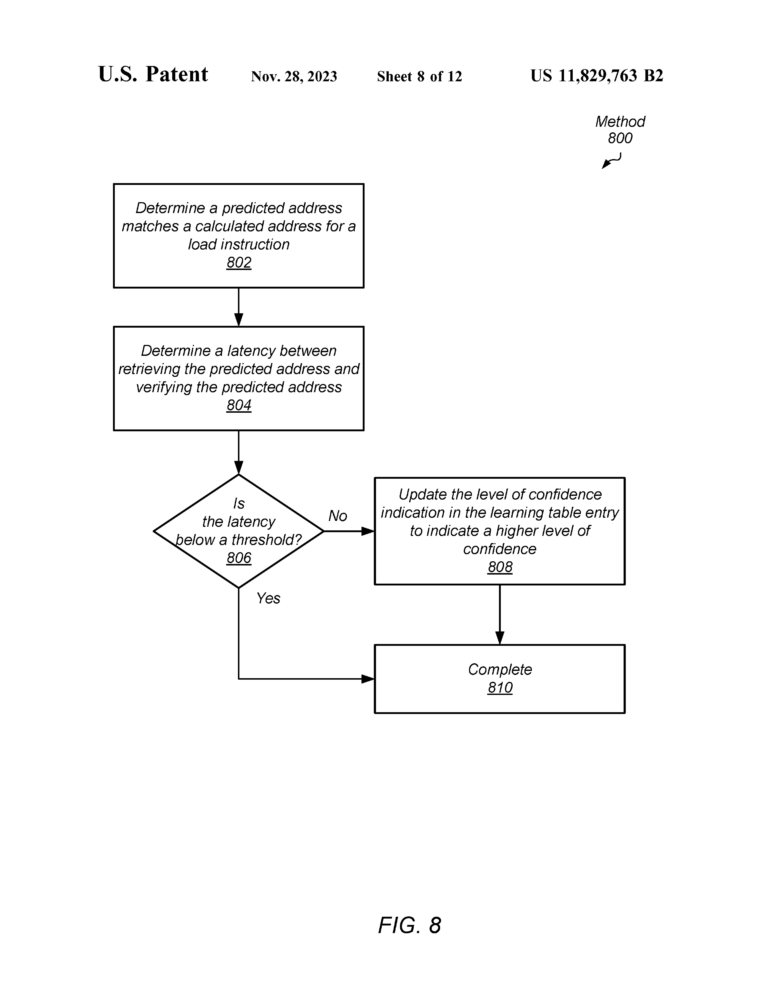
这里很有趣，如果衡量到某条 pred. instr. 和其 non-pred. instr. 的延迟差别不大，那么就在后续不再预测该条 instr.。
文中给出了延迟不同的定义。
具体什么因素会影响单个 pred. instr. 和 non-pred. instr. 的延迟差别，文中没有给出。
LT Entry Invalidating Method Using Consecutive Mismatch Count
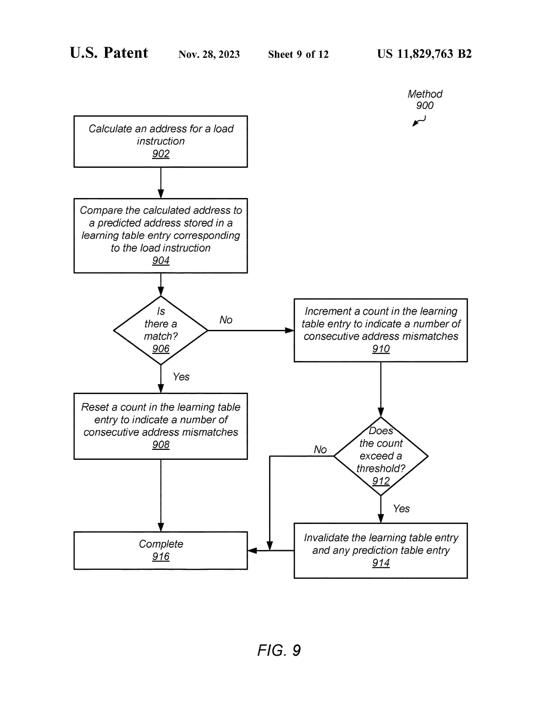
这是一种方法，不同于上述的基于置信度的 LT entry 清除方法。
Avoiding Discrepancies in Memory Access Ordering
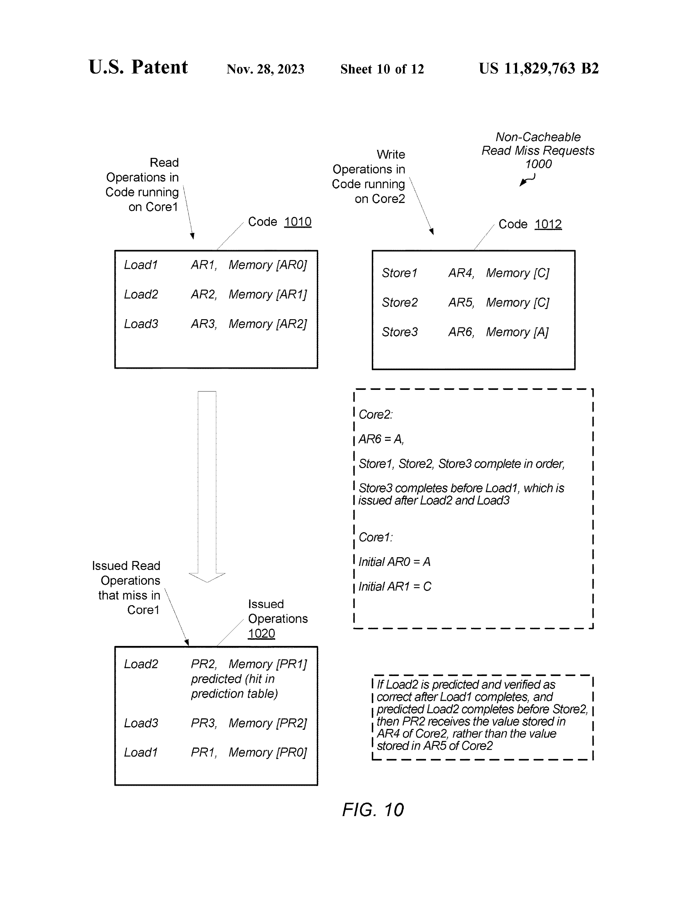
图例疑似有错，AR6 应该是 A。
这里假定：
- store instr. 在所有 non-pred. load instr. 之前均完成。
- pred. load 在 store1 和 store2 之间执行。
- 对于 load2 的预测是正确的。
倘若不进行预测，这里的 load2 会在 load1 之后执行，PR2 的值是 AR5 的值。 但是进行预测后，PR2 的值是 AR4 的值。这造成逻辑上应该先执行的指令 load1 看到的内存状态比 逻辑上应该后执行的指令 load2 看到的内存状态要在时序上靠后。且由于预测地址没有错误，Core1 无法发现该错误。
为了避免这种访存顺序不一致，不允许存在操作数依赖于先前的 load instr. 的 load instr. 被预测。
实际上我并不是很理解这一部分。不存在操作数依赖的 load instr. 如果被提前执行了，似乎看到的内存时序和逻辑上的执行时序也是不一致的。如果 AR6 就是 A，那么检查 load2 是否预测正确的时候应该就是不正确，和文中描述也不符合。
Soc & System
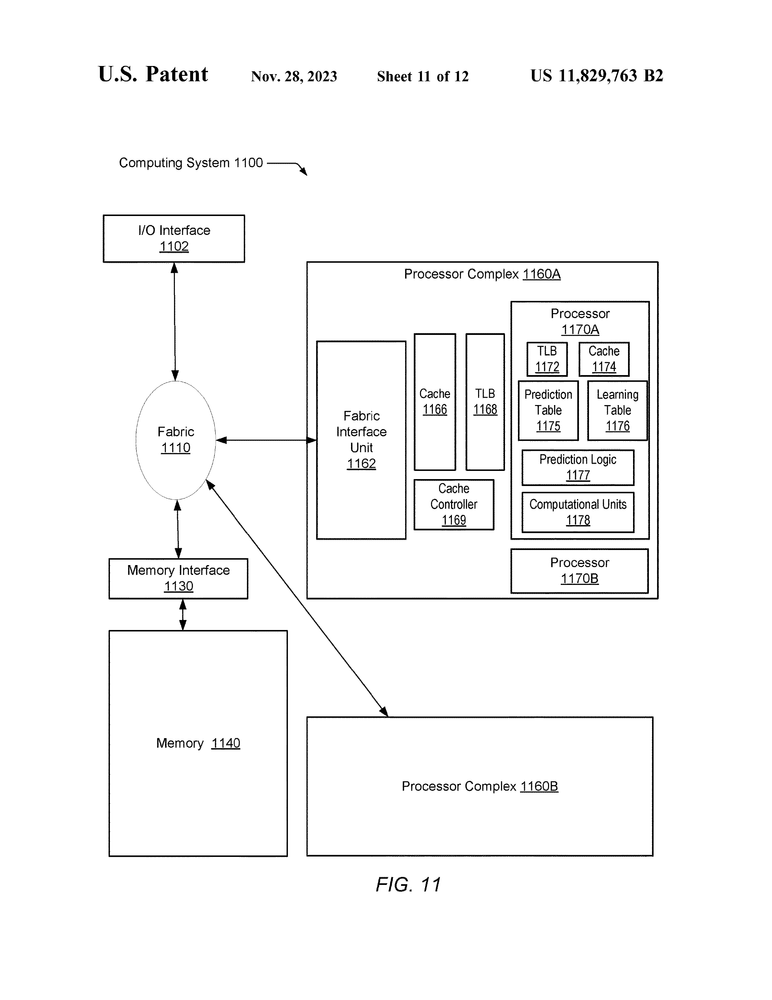
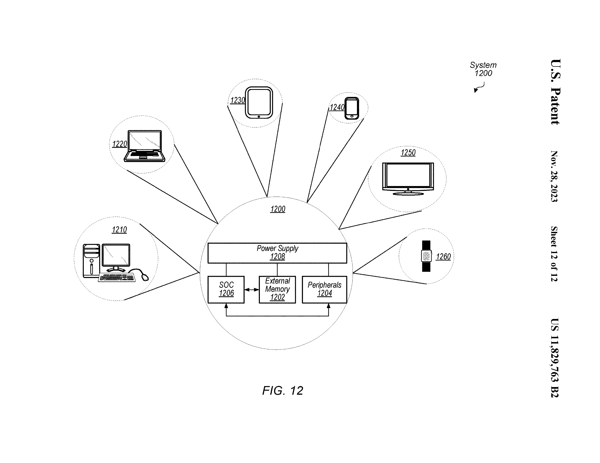